| 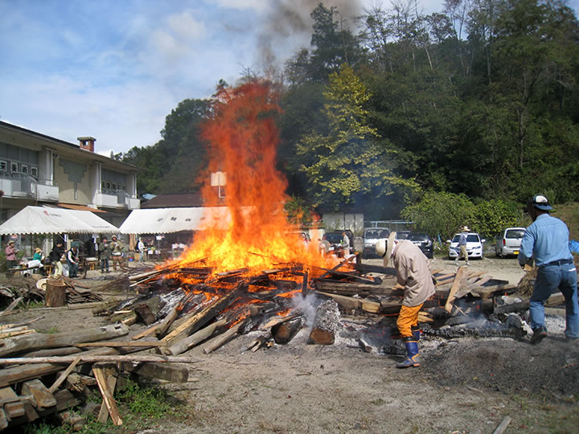 |
台風19号直前に無事終了！
=∴=∵=∴=∵=∴=∵=∴=∵=∴=∵=∴=∵=∴=∵=∴=∵=∴=∵=∴=∵=∴=∵=∴=∵=∴=∵=∴=
《巨大台風の大渦通過直前、縄文の炎渦巻く》
大型台風19号が南海に控えて、天気が心配された10月12日縄文野焼き当日。
早朝５時のまだ暗いときから野炉に火が入れられ、野焼きがスタートしました。
今回焼くのは120点の土器や土偶作品。
あたりが明るくなった頃にあぶり焼きが始まります。
見事な縄文造形の施された土器や、小学生らによる愛らしい土偶・土笛などの作品が火の周りに並べられます。
曇り空から薄日がもれて、今日の野焼きも順調に進みそうな予感。
火にあぶられ熱くなった作品を火床の真ん中に入れ、周りに木を積んで徐々に火力を上げてゆきます。
| 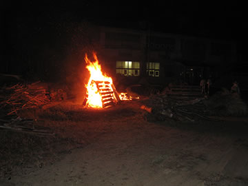 | 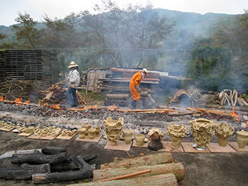 |
| 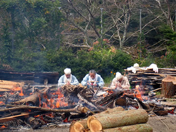 | 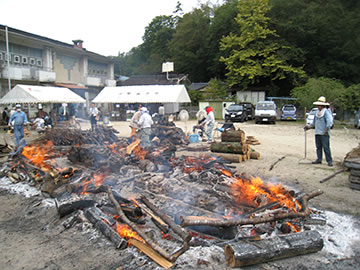 |
温度が上がるにしたがって、土肌がだんだんと濃い焦げ茶から黒へと変わります。
小さい作品は一足先に赤くなり、温度はすでに650度にまで達している様子。
ここから一気に材木を積みあげると炎が作品をおおい、大きな火柱が立ち昇ります。
温度は900度を超えています。
野焼きスタッフも必死の表情。
| 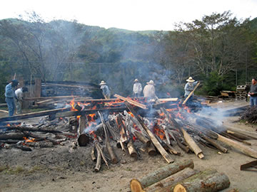 | 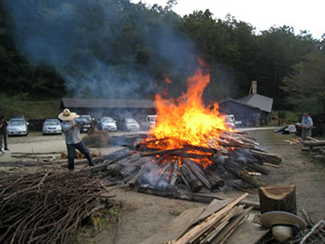 |
| 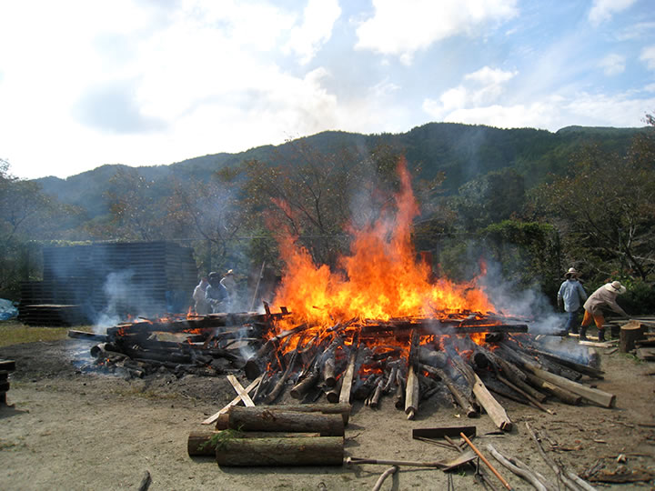 | |
燃え尽きた木が落ちてくると、火のパワーが宿った力強い作品が姿を現わします。
すべての作品がパーフェクトな焼き上がりです。
野焼きを助けてくれた天と地と火に感謝。
そしていくつかの作品をススキで黒く燻して、野焼きは完了しました。
| 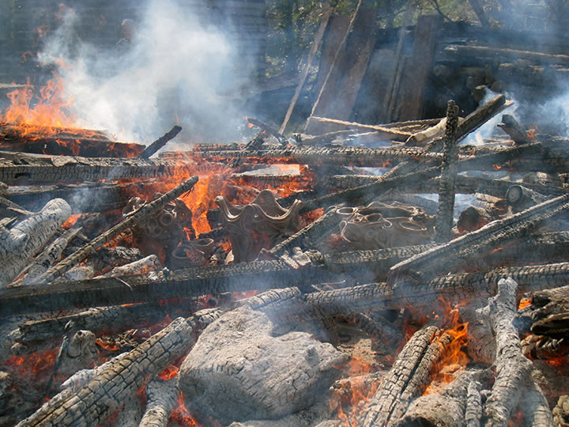 | |
| 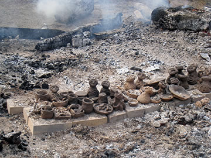 | 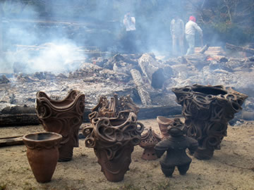 |
今回はこれまでにも増してバラエティに富んだ方々の参加がありました。
「縄文」に興味と魅力を感じる人びとが増えているのを感じます。
県内はもとより、遠く東京や広島など各地から駆けつけてくれた約100名が縄文野焼きの醍醐味を体感しました。
縄文に共感する映画監督やアーティスト、染色家、写真家、教育者などをはじめ、縄文野焼きを一目見たい、
体験したいという老若男女が縄文の炎の周りに集いました。
日本古来の文化的根源として世界的に注目されている「縄文」。
自然と共生し、生と死と再生への畏怖と祈りの世界観が表現された縄文の造形。
猪風来美術館は開館以来、現代創作縄文作品の展示とともに、縄文スピリットにもとづいた陶芸教室と縄文
野焼き祭りを主要な活動として展開してきました。
その結果として、ここ新見市法曽の猪風来美術館が現代縄文アートの発祥地として、多くの注目を集めてきて
いるのを実感しております。
=∴=∵=∴=∵=∴=∵=∴=∵=∴=∵=∴=∵=∴=∵=∴=∵=∴=∵=∴=∵=∴=∵=∴=∵=∴=∵=∴=
《縄文野焼き大賞》
| 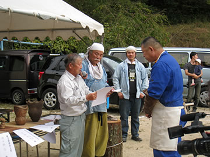 | 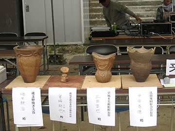 |
焼き上がった作品の中から縄文スピリットあふれる優れた作品を選び表彰しました。
受賞者（敬称略）
○縄文野焼き大賞
縄文土器 磯田 耕治(いそだ こうじ) 新見市大佐永富
○縄文野焼き新見市教育長賞
縄文土偶鈴 宮脇 郁也(みやわき ゆうや) 哲多町本郷小４年
○縄文野焼き法曽焼同好会会長賞
縄文土器 中西 秀徳(なかにし ひでのり) 倉敷市
○縄文野焼き猪風来美術館館長賞
縄文土器 土田 哲也(つちだ てつや) 新見市哲西町矢田
| 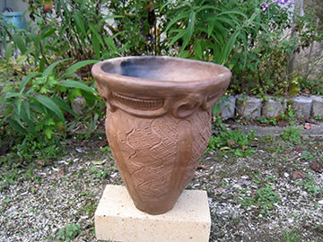 | 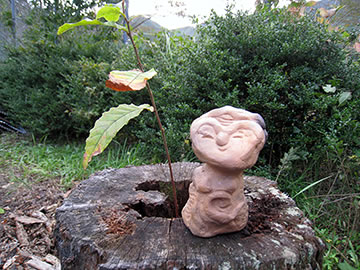 |
| 【縄文野焼き大賞】縄文土器 | 【縄文野焼き新見市教育長賞】縄文土偶鈴 |
| 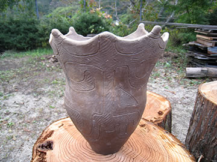 | 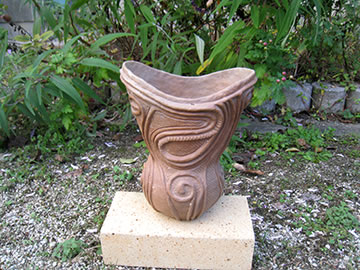 |
| 【縄文野焼き法曽焼同好会会長賞】縄文土器 | 【縄文野焼き猪風来美術館館長賞】縄文土器 |
=∴=∵=∴=∵=∴=∵=∴=∵=∴=∵=∴=∵=∴=∵=∴=∵=∴=∵=∴=∵=∴=∵=∴=∵=∴=∵=∴=
《縄文体験コーナー》
～縄文土器で煮炊き～
初めにでんぷんを土器の内側にまんべんなく塗っておきます。
周りに薪をおいて火を焚き、土器が熱くなってから水を注ぎこみ、沸騰してきたら野菜や肉を入れます。
トラブルもありましたが、お手伝いしてくれる方々に助けられて無事に出来上がりました。
この日はタカキビ粉を使った団子汁。
みんなで土器料理の味を堪能しました。
| 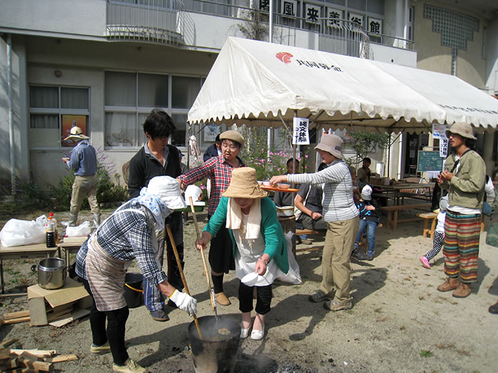 |
～粘土でつくろう・石で勾玉をつくろう～
土偶や小さい器などをつくる縄文粘土体験。
作品に縄を転がして縄文をほどこすと、見事な縄文作品の出来上がり！
黒やピンクや白の石での勾玉作り。
滑石を紙やすりでこすって丸く加工し、思い思いのすてきな勾玉に仕上げます。
勾玉は豊饒を祈る命のカタチ。若い人にも人気が高い体験です。
| 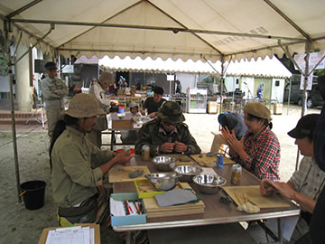 |
=∴=∵=∴=∵=∴=∵=∴=∵=∴=∵=∴=∵=∴=∵=∴=∵=∴=∵=∴=∵=∴=∵=∴=∵=∴=∵=∴=
《販売コーナー》
法曽焼同好会地元会員による販売コーナーでは、昼食としてうどんや猪カレーうどん、猪カレーライスや
飲み物などを販売しました。
また、地元産品として法曽茶と法曽焼き茶碗、ピオーネも並びました。
| 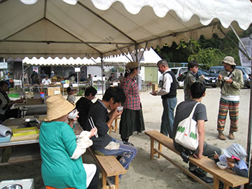 |
=∴=∵=∴=∵=∴=∵=∴=∵=∴=∵=∴=∵=∴=∵=∴=∵=∴=∵=∴=∵=∴=∵=∴=∵=∴=∵=∴=
| 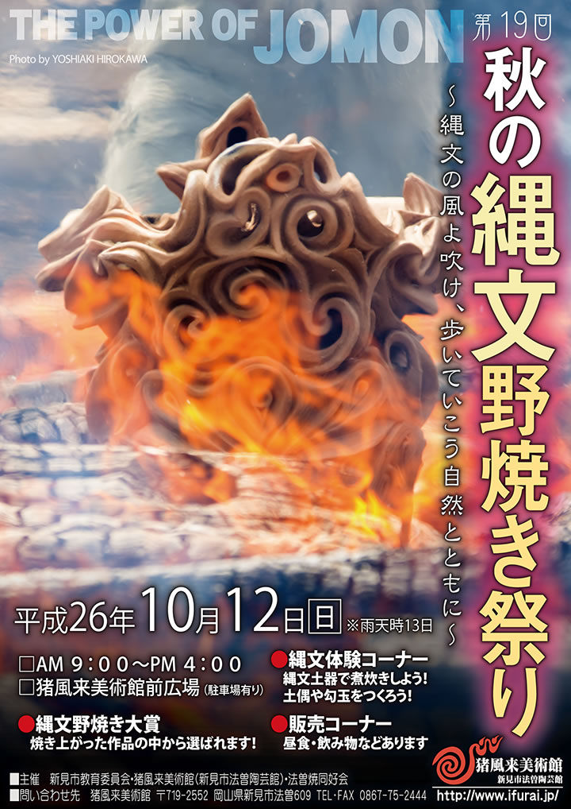 |
| 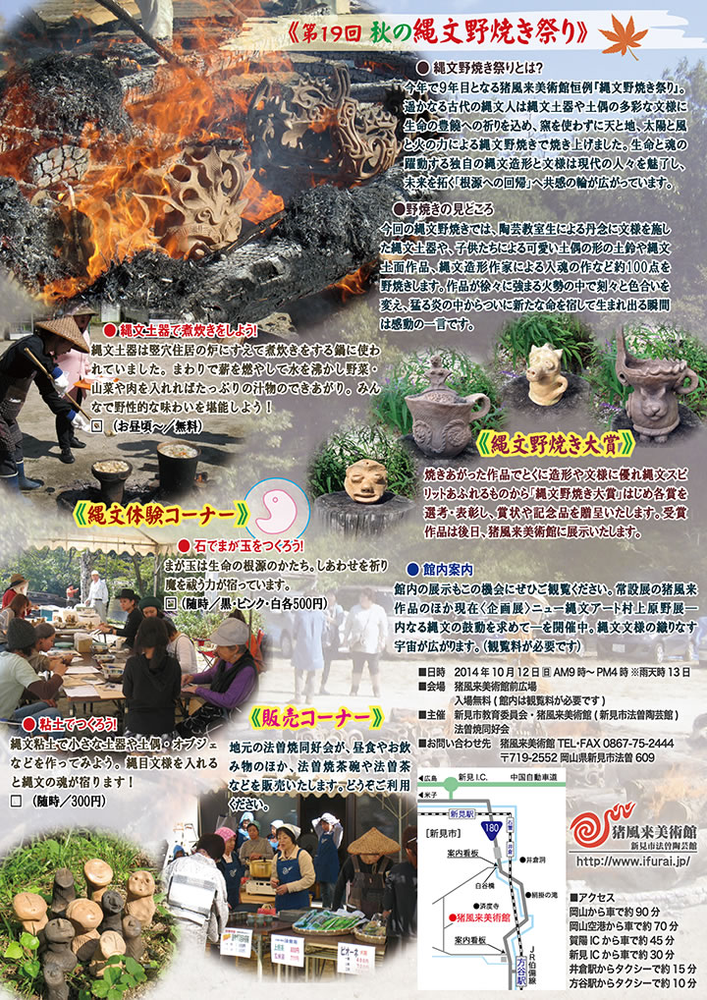 |
| 【第１９回「秋の縄文野焼き祭り」チラシ】 →（表面）PDF版を開く →（裏面）PDF版を開く |